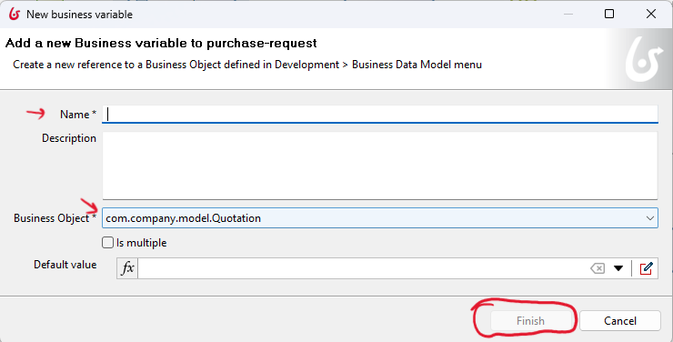
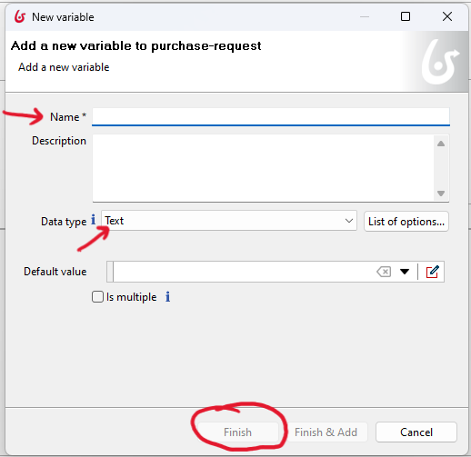

Extract the data variables needed for use in the implementation phase
Based on the process description, you should be able to extract the data variables needed for use during the execution phase.There are two data types:
- Business data refers to the data that needs to be stored within the Business Data Model (BDM).
- Process variables are the data needed to be used during the execution of each process. These variables are used temporarily during execution, for example, to get data from the user and perform mathematical functions before saving it in the database. They can also be used to add conditions to gateways.
How to add Business Data and Process Variables?
-
To add data variables, select the pool. Then, within the 'Data' tab, choose 'Pool Variables.' Afterward, you can add Business variables (for BDM objects) and Process variables (used during execution).

-
To add a business data, after clicking 'Add' in 'Business variable,' you can enter a name and select the Business Object (from the BDM object).
 -
To add a business variable, after clicking 'Add' in 'Process variable,' you can enter a name and choose the data type (Text, Double, ...).

Retrieve the mission data variable from the process description.
In the process description, you can find in bold the data variables that need to be used during the execution phase. Additionally, attributes used late in the implementation are marked in italic. However, there is still one missing business data. Please find it and add it to your process data.A user fills out a procurement request (including a summary and description) and identifies a supplier. This request is then sent to the supplier for a quotation. The supplier should add the following information to the quotation: price, comments, and whether they accept or not. The status of the quotation will automatically change to 'completed.'
After completion, the quotations are sent back to the requester for review and selection. Before starting the review process, the status of the request will be changed to 'pending for review.' During the review of the quotation, the requester should either accept or reject it. Finally, based on the decision of the requester, the request status will change to 'completed' or 'abort.'
To effectively implement the process, developers must understand how the information is conceptually structured and arranged within each class (suppliers, quotations, and requests) and how the process interacts with it
Please add the missing data variable to your process model.